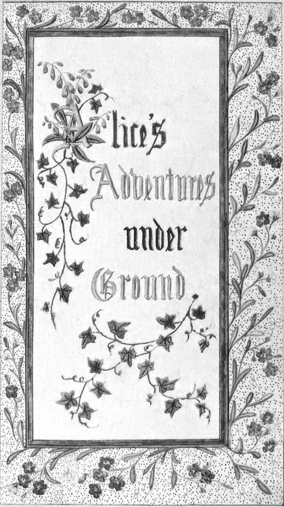

ありふれた
クリスマスのおくりもの
かわいい子へ
ある夏の日の思い出に
［＃改ページ］クリスマスのおくりもの
かわいい子へ
ある夏の日の思い出に

アリスはあっきあきしてきた、池のほとり、お姉さまのそばですわってるのも、何もしないでいるのも――ちらちらお姉さまの読んでる本をのぞいてみても、さし絵もかけ合いもないから、本のねうちはどこ、とアリスは思う、さし絵もかけ合いもないなんて、って。だから物思いにふけるばっかり（といってもそれなり、だって日ざしぽかぽかだとぼんやりねむくなってくるし）、デイジーの花輪作りはわざわざ立ち上がって花をつむほど楽しいものなのか――そこへふと赤い目の白ウサギが１羽そばをかけぬける。
あまり目を引くようなところもないから、アリスにしてもさほどとんでもないとも感じないまま、聞こえてくるウサギのひとりごと。「おおお、ちこくでおじゃる！」（あとになって思い返すと、ここでふしぎがってしかるべきという気もするけど、そのときはみんな自然きわまると思えてね）その次にウサギがチョッキのぽっけから時計を取り出しまじまじしてからかけ出したから、アリスもとびあがる、だってむねがはっとした、これまでそんなウサギ見たことない、チョッキにぽっけがあったり、時計を取り出したり、そこで気になる気になる、野原をかけて後を追っていくと、ちょうど目の前でそいつはかき根の下、大きなウサギ穴にぴょんと入って。すぐさま飛びこみアリスは後を追う、またもどってこられるかなんて、ちっとも考えもせずに。
そのウサギ穴はまっすぐ続いて、まるでどこかトンネルみたい、そのあといきなり下り坂、いきなりすぎてふみとどまろうと思うまもなく、気づいたら深いふきぬけみたいなところに落っこちていて。穴がすごく深いのか、落ちるのがすごくゆるやかなのか、どうにもひまがありすぎて、落ちるあいだにあたりは見られる、次に何が起こるのかなって思いもできる。まず下を見てみると、ゆく先はわかるけれども、暗すぎて何がなんだか。そのあと穴のぐるりを見ると、目にとまるのはぎっしりならんだ戸だなに本だな。あちらこちらに画びょうでとまった地図に絵。通りがかりにたなのひとつからびんを取ってみると、〈オレンジ・マーマレード〉とはられてあるのに、とてもがっかり、中身はから。とはいえ、びんを放るのはしのびない、だって下のだれかが死ぬといけないから、うまく戸だなのひとつへ通りすがりに置いておいた。
「ふふ！」とアリスは考えごと。「こうやって落ちておけば、もう
ひゅうん、うん、うん。いつになったら落ちきるのかな。「これまでのところで、どれくらい落ちたのかしら。」と声に出してみる。「地球のまんなかあたりには来てるはずね。ええと、６４００キロの深さだったかしら――」（だってほらアリスはお
やがてまた始めて。「まさかこのまま地球をまっすぐつきぬけて？ 面白いっ、行きつく先の方々は頭を下にして歩いてるってことね！ でもちゃんとお国のお名前何ですかっておうかがいしないと、ねえ。どうも、おくさま、ここはニュージーランド、それともオーストラリア？」――と言いながら左足を引いてひざを曲げようとしたんだけど（空中でこんなふうにスカートつまむところ思いえがける？ できると思う？）「そうしたら物をたずねたあたくしが、なんて物知らずの小娘って思われてよ！ だめ、聞けない。でももしかしたらどこかに書いてあるのが見つかるかも。」
ぴゅうん、うん、うん。ほかにやることもなくて、またすぐにアリスはしゃべりだす。「ダイナ、あたくしがいなくて、
アリスにけがはちっともなくて、ぴょんとそのまままっすぐ立てる。見上げてみても、頭の上はまっくらやみ。前にはまた長い道があって、白ウサギがまだ見えるところにいて、かけ足で進んでいく。ぐずぐずしてるひまなんてない。走り出すアリスは風のよう、ちょうど向こうが角を曲がるところでこんな声が。「ぴょんぬるかな、もう大ちこくでおじゃる！」続いてこっちも角を回ると、気づけば天井低めの大広間、その天井からずらりとぶらさがったランプで照らされてて。
まわりにぐるりとドアがならんでいたのに、どれもみんな
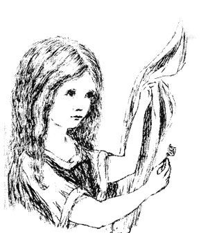
ほかにやることもなかったから、テーブルのところに引き返して、もうひとつ鍵でも、いやせめて身体のたたみ方の本でも見つからないかなと思ってたんだけど、今度テーブルに出てきたのは小びんでね――「さっきまでぜったいなかったのに」ってアリスは言って――びんの首にくるっとむすんであったのが紙切れで、そこに〈ノンデ〉って文字がカタカナできれいに
「ノンデ」っていうのはたいへんけっこう、「でもまずたしかめること。」って言うアリスちゃんはお利口さん。「びんに〈毒〉の
とはいえ、このびんには毒の印はなかったので、アリスが味見してみると、とってもおいしくて（なんと風味はサクランボのタルトにカスタード、パイナップルからローストチキンとキャラメル、あつあつのバタートーストまでがいっしょになったみたいで）あっというまに飲みきっちゃった。
＊ ＊ ＊ ＊ ＊ ＊
「とってもへんてこな気持ち！」とアリス。「望遠鏡みたく身体がたたまれてるのね。」
その通り。今や
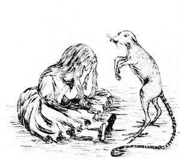
「しっかり！ 泣いたってどうしようもなくてよ！」とアリスは自分に言い聞かせる。「あなた、今すぐにおやめなさい！」（いつもご自分へのおいさめはとてもご
ふと目を落とすと、テーブルの下に置かれた
ちょびっとかじって、そわそわとひとりごと。「どちらの方？ どちらなの？」とどっちになるかわかるように、手を頭のてっぺんに当てていたらびっくりびっくり、気づくと同じ背たけのまま。たしかに焼菓子を食べただけじゃ、こうなるのがふつうなんだけど、アリスはとんでもないことが起こるってそれだけを考えるようになってたから、まともに進むことがすごくつまらなくばかげたことに思えてね。
だからむきになって、たちまちぺろりと焼菓子をたいらげたんだ。
＊ ＊ ＊ ＊ ＊
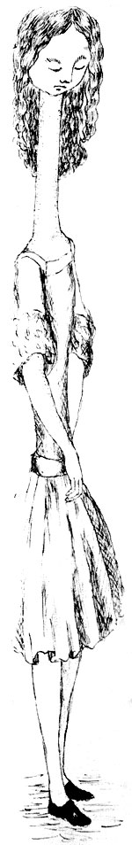
「てんへこりん、てんへこりん！」と声をあげるアリス。（びっくりのあまり、ちゃんとした言葉をどわすれしてね、）「今度は身体が広げられてる、世界最大の望遠鏡をのばしてるみたい！ ごきげんよう、あんよちゃん！」（だって足元を見下ろすと、どんどん遠ざかって、ほとんど見えなくなり。）「ああ、おいたわしや、あんよちゃん、こうなったらどなたにくつやくつ下をはかせてもらおうかしら、ねえ？ ぜったいあたくしには無理！ あんまりにもはなれすぎて、こっちからお世話できなくてよ。できるだけご自分で何とかなさることね――でも気づかいはしてあげないと。」とアリスは思って、「でないと行きたい方に歩いてくれないかも！ そうね、クリスマスごとに新しいブーツをさし上げてよ。」
頭のなかであれこれ、どうしようかとめぐらせ続け、「ひとに運んでもらわないと。」と考えて、「って、もうふきだしそう、自分のあんよにプレゼントだなんて！ あて名だっておかしなものになってよ！ カーペットにお住まいの
アリスの右足さまへ
アリスから愛 をこめて
まったく！ あたくしの話もからっぽね！」アリスから
ちょうどそのとき、頭が広間の天井にごつん。なんとただいま背たけは２メートル７５をややこえたあたり、たちまちちっちゃな金の鍵を取り上げて、お庭のドアへあわてて向かう。
ふびんなアリス！ がんばってもできるのは、横向きにねそべって片目でお庭をのぞくだけ、向こうへ行く望みなんて、これまで以上にありえない。へたりこんでまた大泣き。
「あなた
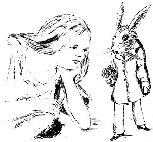
花束と手ぶくろを拾い上げたアリス、その花束がかぐわしいので、ずーっとにおいをかぎながらひとりごとの続き――「もう、もう！ 今日はけったいなことばかり！ でも昨日はみんないつも通りだったのに。もしや夜のうちにあたくしの身に何か。待って。今朝起きたときのあたくしはちゃんとあたくし？ ちょっとちがっていた気がしないでもなくてよ。でも今あたくしがあたくしでないのなら、いったいどなた？ んもう、まったくややこしい！」そこで同い年な知り合いの子のことをみんな思いうかべていって、自分がそのうちのだれかになっていないかたしかめたんだ。
「あたくしがガートルードでないことはたしかね。」とつぶやく。「だってあの子の
びっくりだ わあにさん
しっぽがね ぴかーん！
ナイルがわ ざあぶざぶ
うろこにね びしゃーん！
キバだして にいんやり
ツメひろげ じゃきーん！
おいでませ さかなちゃん
にこにこ……がぶりっ！
しっぽがね ぴかーん！
ナイルがわ ざあぶざぶ
うろこにね びしゃーん！
キバだして にいんやり
ツメひろげ じゃきーん！
おいでませ さかなちゃん
にこにこ……がぶりっ！
「ぜんぜん歌詞がちがってよ。」とかわいそうにアリスは目になみだをいっぱいにためながら、こう思った。「やっぱりあたくしフローレンスにちがいないのね、だったらあたくしあのせせこましい小屋にうつり住まなきゃいけないことになって、しかも遊ぶおもちゃもろくにないの、うわあん！ お勉強も山もりよ！ いやあ！ あたくし心に決めた、あたくしがフローレンスなら、ここでじっとしててやるんだから！ どなたかがのぞいて『上がりなさい！』なんて言ってもむだなんだから！ あたくし上目で申しあげてよ、『ところであたくし何者？ まずそれにお答えになって。それから、それがあたくしのなりたい方なら上がりますけど、ちがうようでしたらほかのどなたかになるまで、ここでじっとしております。』――でも、ああもう！」とアリスはいきなりわっと泣き出して、「そののぞいてくれるどなたかが、いてくださったらどんなにいいか！ もううんざりよ、こんなところでひとりぼっちだなんて！」
こう言いつつ自分の手に目を落としてみるとびっくり、気づけばしゃべっているあいだにウサギさんの手ぶくろをはめていたんだ。「どうしてこんなことができてるの？」と思ってね、「また小さくなってるにちがいないわ。」起きあがってテーブルまで行ってそれで背たけをはかってみると、だいたいしかわからないながらも、今はおよそ６０センチで、大いそぎでちぢみつつあってね。すぐにわけはわかった、手に持っていた花束のためなんだ。あわてて手放すと、まさにそのときからちぢみはすっかりとまって、気がつくとただいまの背たけはたったの７センチ。
「今こそお庭よ！」と声をあげたアリスはあわててあの小さなドアへもどったんだけど、小さなドアにはまた鍵がかかってて、ちっちゃな金の鍵も前と同じでガラスのテーブルの上、だから「今までで最悪！」と女の子は思うしかない。「だってこんなちっちゃくなったの初めてなのよ、初めて！ 正直ひどすぎてよ、ひどすぎ！」このしゅんかん、足がすべって、ぼちゃん！ しょっぱい水に首までつかって。初めのうちは海に落ちたと思ったんだけど、あとからここが地底だってことを思い出して、そのあとすぐにはっとした、自分が３メートル近いときに泣いて作ったなみだまりなんだって。「あんなに泣くんじゃなかった！」と言いながらアリスは水をかいて前に進もうとしてね、「
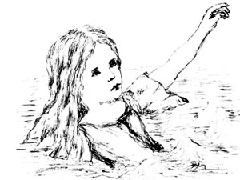
「このネズミに声をかけて、」とアリスは考えごと。「何かになって？ でもあのウサギはどうもきわめてとんでもないことになっていたし、ここへ落ちてきてからというもの、あたくしだってそうなんだから、あのネズミだって話せないわけなくってよ。とりあえずやってみるつもりで。」
で、やってみた。「ねえそこのネズミ、ごぞんじ？ この池からの出方。このあたりを泳ぎまわってへとへとなの、ねえ、そこのネズミ！」そのネズミはどこか問いたげにその子を見つめて、小さなひとみで目くばせしてくれたみたいなんだけど、一言もなくって。
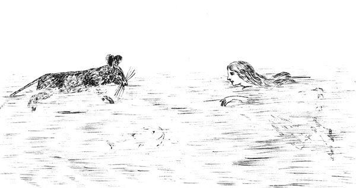
「こっちの言葉がわからないのかも。」とアリスは考えごと。「たぶん外国ネズミなのね、ウィリアムせいふく王についてわたってきた！」（その子の知ってるかぎりでは、何年前に何が起こったのかはうろ覚えだから、こんなことに。）で、またやってみる。「
「お好きでねえよ！」とネズミのかん高く気持ちのこもった声。「こっちの身になりゃわかんだろ！」
「ええ、おっしゃる通りね。」とアリスの声は相手をなだめるよう。「そうお
「されたともよ！」と声をはるネズミは、どう見ても
「いたしませんとも！」とアリスはあわてて話を変えようとする。「あなた――あなた――あれはお好き――犬は？」ネズミの返事がないので、アリスはこれはいいと続けてね、「お屋敷のそばのかわいい子犬、この子をお引き合わせしたくてよ！ すんだ目のちっちゃなテリアで、ほら、あるのよ！ もう長々とした茶色の巻き毛！ それに物を投げるとひろってくるの、あとちんちんしてごはんをおねだりしたり、もう色々――半分も思い出せなくてよ――そう、かい主は地主さんで、お話ではみんなやっつけるって、畑のネズミを――ああっ！」アリスはやっちゃったというふうに、「またお気を悪くされたかしら。」だってもう全力で泳いではなれていくネズミ、進むほどに池はばしゃばしゃと波打つ。
それで後ろからやさしく声をかけたんだ、「ネズミさん！ おもどりになって、もう犬ネコのお話はしないから、お好きでないなら！」するとそれを聞いたネズミは、回ってゆるゆる泳ぎもどってくる。顔は真っ青（
そろそろいい

［＃改ページ］
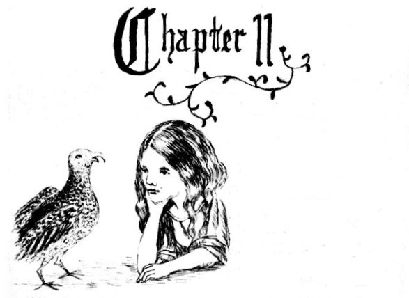
なんともへんてこな絵づらのご一行がほとりにお集まり――羽を引きずった鳥さんたちに、毛がぴたーとなったむくじゃらたち――みんなずぶぬれで気持ち悪くていやな気分。さてここで考えるべきは、どうやってぱさぱさにするか。かわかし方を話し合ううち、アリスはもうたいしておどろかなくなったというか、気づいたら鳥さんたちと仲良くお話ししていて、生まれたときからの知り合いみたくなっていてね。なるほどインコとは長々言い争ったものだから、しまいにはむすっとされたんだけど、ここで「わたしの方がお姉さんなの、だからモノをよくわかってるに決まってる」なんて言われようものなら、アリスだってインコのお年を知らないからそんなの受けつけないし、インコも自分からぜったいお年を口にしたくないので、どっちもあとは何とも言えない。
とうとうハツカネズミが、それなりにもっともなことがあるみたいだってことで、よびかけてね、「すわれや、みなのしゅう、耳かっぽじろ！ おれがすぐにでもお前らをぱっさぱさってほどにしてやる！」すぐさまみんなはふるえながらも大きく輪になってこしを下ろして、アリスがどまんなか、気になるとばかりに目をネズミに向けてね、だっていますぐにでもかわかさないと、ひどい
「おほん！」とネズミはもったいぶった感じで、「みなのしゅう、いいか？ こいつは知るかぎりいっとうぱっさぱさのやつよ。どうかごせいちょうを！
ウィリアム
「うげ！」とインコは身ぶるい。
「ごめんなすって。」とネズミは顔をしかめながらも、それでいてていねい。「あんた声あげたか？」
「いえいえ！」とあわてるインコ。
「そうかあ？」とネズミ。「まあ続きよ。エドウィンとモーカー、つまりマーシアとノーサンブリアの主さまも、味方するとした。スティガンド、国うれうカンタベリ大司教までもエドガー親王連れてウィリアムに
「まだびしょびしょ。」とかわいそうなアリス、「ぜんぜんぱさぱさにならなくってよ。」
「ならば、」とドードーが立ち上がり大まじめに、「集まりの休会を
「国語をしゃべれ！」とアヒル。「そんな長たらしい言葉、半分も意味がわからんし、それどころか君だってさっぱりわかってないだろ！」ここでアヒル、自分にうけてグヮグヮと大笑い。ほかの鳥さんもちらほら聞こえよがしにしのび笑い。
「言いたかったことはただ、」とドードーは気をそこねたみたいでね、「この近くに小屋があるから、そこでならこのおじょうさんもお集まりのみなさんもぱさぱさにかわかせる上、そのお話も気持ちよく聞けるということなのだ、お前さんだって我々に話をする
ネズミもこれにはむべなるかな、一同は川のほとりぞいに動いてね、（だってこのときには池ももう広間から流れ出して、きわにはイ草やわすれな草がならんでいたからね）ゆっくりと１列でドードーを先頭に進む。そのうちにじれてくるドードー、あとのみんなをアヒルにまかせて、足取りを速めて先へ、連れていくのはアリスにインコそして子ワシで、あっとういまに小屋に
さてふたたびほとりでみんな大きな輪になって、すわってネズミにご自分のむかっ話をとおねだり。
「おれのは、長々しっぽりよ！」とネズミはアリスの方を向いて、ため息。
「長々のおしっぽ、ほんっとに。」とアリスはきらきらした目をネズミのしっぽに下ろしてね、そいつは輪をぐるりひとめぐりしそうなほどで。「でも、後ろの〈りよ〉って何のこと？」そうしてこのことになやみだすうち、ネズミも話し始めて、だからお話も頭のなかではこんな感じになっちゃって。
おれらの住まい、しきものの下
ぶあつくぬくぬく住みよしだ、
だがなやみもありだ
ネコときた！
水さすや
からが、目
のゴミクズ
が、気を重
くするのが
犬なりしか！
ネコが
されば、
あとは
ネズミの
あそ
びば、
なのにある日！
こは（さらば）
ともに来たる犬
ネコ、おい
かけっ
こ、
やられて
ネズミぺ
しゃんこ、
みな
ごろ
しよ
ぶあ
つく
ぬ
くぬ
く
して
いた
と
こ
！を ろ
との を
こ― 、
―およろみてえ考
「お前、聞いてねえだろ！」とネズミはアリスにびしっと。「何考えてんだ？」
「ごめんあそばせ。」とおそれいるアリス。「５つめの曲がり角にいらしたところ、よね？」
「わっからんな！」と声をあげるネズミは、とげとげぷんすか。
「あ、からんだ？」と言うアリス、いつでも人の役に立ちたいざかりなので、目をかがやかせてきょろきょろしてね、「まあ、でしたらほどかせていただけて？」
「そんなこと何も言わねえよ！」とネズミは立ち上がって、みんなからはなれていく。「そんなからっぽの話でバカにされるなんざ！」
「思いちがいよ！」とアリスは苦しまぎれの言いわけ。「でもあなただってずいぶんいらちだこと。」
ネズミの返事はただうなり声だけ。
「さっさとお話の続きをしめてくださる？」とアリスが
「ざんねん、お去りだなんて！」とインコがため息、そしておばさんガニはついでとばかりにむすめに小言。「ほらね！ つまり、あなたもかっかしちゃダメってことなのよ！」「ママはだまってて！」と子ガニはややつっけんどん。「がまん強いカキだってどうにかなりそうよ！」
「ここにうちのダイナちゃんがいたらな、できるのに！」とアリスの大声は特にだれに向けてというわけでもなく。「あの子ならあいつをたちまち連れもどしてきてよ！」
「そのダイナってどなた？ よろしければ教えてくださらない？」とインコ。
アリスは乗り気のお返事、だっていつでも自分のペットのお話をしたいざかり、「ダイナはうちのネコ。ネズミ取りにかけてはもう一流なの、おわかり？ それにああ！ 鳥を追いかけるあの子をお見せできれば！ もう、小鳥なんかねらいをつけたとたんにがぶりよ！」
こんなお返しをしては、一同大さわぎになるわけで――たちまちにげまどう鳥もいたほど、おじさんカササギなんかそうろっと身じたくを始めてこう口に出してね、「そろそろうちに帰らねばな、夜風はのどをいためるので。」それからカナリアは声をふるわせながら子どもたちによびかけてね、「あの子に近づいちゃダメ、あんな子とお友だちになっちゃダメだからね！」いろいろ言いわけを作って、去っていくみんな、アリスはたちまちひとりぼっち。
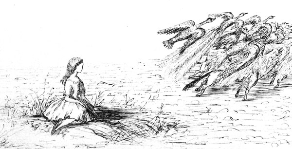
しばらくみじめにじっとすわってたんだけど、ほどなく気を取り直してね、例のごとく、ひとりごとの始まり。「だれかしら、もうちょっといてくださってもよろしくてよ！ あんなに、仲良くなりかけてたっていうのに――ほんとに、あのインコとあたくし、もう姉妹みたいなものだったのに！ あのかわいい子ワシちゃんにしてもそうよ！ それからアヒルにあのドードー！ あのアヒル、すてきに歌ってくれたのに、みんなで泳いでいるさなかに。あとドードーが、あのすてきな小屋への道をごぞんじなければ、ぱさぱさにできていたかわからなくてよ――」と、このままだといつまでもこんなふうにしゃべっていたかわからないところ、ふとぱたぱたという足音が耳に入ってね。
なんと白ウサギがとろとろと引き返してきたわけで、歩きながらそのあたりをきょろきょろ、なくしものでもしたみたいで、そのひとりごとが聞こえてくる。「
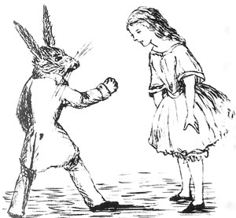
まもなくウサギに気づかれたアリスは、ちょうどふしぎそうにちらちらしながらつったってたんだけど、たちまち早口で
気づけばあっというまに目の前にこじんまりしたおうち、ドアのところにはつるつるした金ぞくの
このときまでになんとか入れたお部屋はこぎれいなところで、まどぎわにテーブルがひとつあり、上には鏡がついていて、（アリスの思った通り）ちっちゃい白ヤギの手ぶくろが何組か置いてあった。１組取り上げて出て行こうとしたとき、目に飛びこんできたのが、鏡わきに立てられた小びん。今度は〈ノンデ〉の
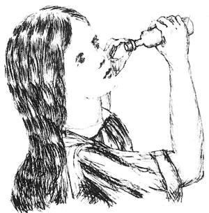
してこれその通りに、しかも思ったよりも
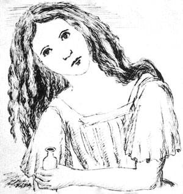
なんたること！ もはや手おくれ、ぐんぐん大きくなっていって、たちまちひざをつくほかなくなり、またたくまにそうするよゆうもなくなって、なんとか横になろうとしてね、ひじをドアにぶつけたり、反対のうでを頭まわりでまるめたり。まだまだ大きくなるから、最後の手としてうでの片方をまどの外へ出して、片足をえんとつのなかにつっこんで、そこでひとりごと。「もうこれでせいいっぱい――これからあたくしどうなるの？」
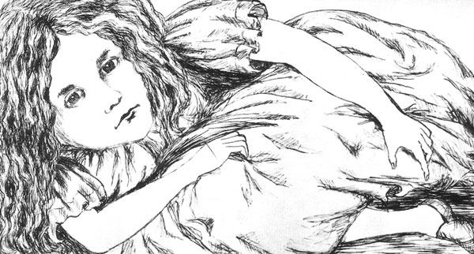
アリスにさいわい、まほうの小びんのききめはここで打ち止め、もう大きくはならない。とはいえやっぱりいごこち悪く、それにどうにもこのお部屋の外には出られる見こみもなさそうで、気がふさぐのもむりはなく。「おうちにいた方がまだいい。」とは、ふびんなアリスの想い。「ずっとのびちぢみしてばっかりとか、ネズミ・ウサギに頭ごなしってこともなくって――あのウサギ穴に入らなきゃよかった、って思うけど、けれど――どこかへんてこ、ほら、こんな世界って。ふしぎなの、どんなことが起こってくれるのって！ いつもおとぎ話を読んでると、こんなことぜったい起こりっこないってきめつけるのに、いま、ここで、あたくしはそのまっただなか！ なら、あたくしについて書かれた本があってもよくてよ、じゃなくて？ 大きくなったら書くんだから――まあ、今だって大きいけれど。」と、いじらしい口ぶり、「といっても、ぎゅうぎゅうでここではもう大きくなれなくてよ。」
「だとすると、」とアリスは思う。「今よりもう年は取らないってこと？ ほっとしなくはないわ――おばあちゃんにならなくていいし――でもそうなると――いつまでもお勉強の山！ えっ、そんなのぜったいいや！」
「もう、アリスのバカ！」とまだまだ。「ここでお勉強なんて、できっこないんだから！ ね、あなただけでぎゅうぎゅうだから、ぜんぜん入らなくってよ、教科書なんか！」
というわけでそのまま、まずひとりめの役、それからもうひとり、というように、かけ合いをぜんぶひとりでやってたんだけど、何分かすると外から声がしたので、やめて耳をそばだてる。
「メリアン！ メリアン！」とその声。「とっとと手ぶくろを持っておじゃれ！」そのあと、
「そんなのむーりー！」と思うアリス、待ちかまえて、まどのま下にウサギの気配がしたところで、いきなり手をのばして、そのままつかむそぶり。何もつかまえられなかったけど、聞こえてくる小さなさけび声と、ずっこけてガラスをわる音。というわけで頭のなかでは、キュウリのなえ箱かそんな感じのものにつっこんだのかも、てなことに。
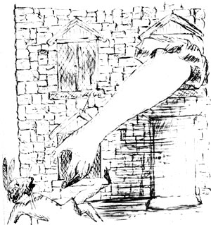
お次に来るのはぷりぷり声――ウサギのね――「パット、パット！ どこにおじゃる！」それから今度は聞いたことのない声。「ここにおりますだ！ 土リンゴほり中で、あのその、おやかたさま！」
「土リンゴほり、ほおお！」とぷんすかウサギ。「こちへおじゃれ、ここから出すでおじゃる！」――さらにガラスのわれる音。
「さあ教えるでおじゃる、あのまどからはみ出てるものは何ぞえ？」
「きっとうんでだで、おやかたさま！」（正しくは、うで、ね。）
「うで！ あほうが！ あんな大きさのうでがおじゃるか！ ほれ、まどわくいっぱいぞ、の、のお？」
「そうでごぜえますが、おやかたさま、やっぱどう見てもうんでだで。」
「なぬ、そんなの知ったことか、あれめを片づけておじゃれ！」
そのあと長々と静かで、アリスにもときどきささやき声が聞こえたくらい、それも「ぜってえいやですだ、おやかたさま、めっそうもねえ！」「言うた通りにおじゃれ、へたれめ！」といったもので、とうとうもう１度手をのばしてまたつかむそぶりをするはめに。今度はふたつの小さな
しばらくじっとしているあいだ、何も聞こえなかったのだけど、ついに耳に入るごろごろ手おし車の音、たくさんの話し合うざわめき、わかった言葉は、「もうひとつハシゴがおじゃったな――なんぞ、持ってくんのひとつだけでよかったんか、ビルがもひとつ持ってて――ここ、この角に立てかけ――ちがう、まずふたつつなげねえと――その高さだと、まだとどかな――おお、これでちょうどいい、やかまし言うな――ここだ、ビル！ このロープをつかめ――やねはだいじょうぶか？――気をつけろ、あのかわら、ずれて――あ、落ちてくる！ 下の、気をつ――」（ずどーん）「さて、だれがあれやる？――ビルじゃねえか――だれがえんとつおりるでおじゃ――やめろ、おらあいやだ！ てめえ行けよ！――んな、おらだってそんなの――行くべきはビルでおじゃる――おい、ビル！ おやかたさまがおおせだ、お前さんえんとつを下りてけって！」
「まあ、ならビルがえんとつを下りなくちゃいけないってこと？」とアリスはひとりごと、「ふぅん、ぜんぶビルにおしつけたみたいね！ あたくしも、たくさんもらったってビルの代わりはおことわり。だんろはすごくきちきちだけど、たぶんちょっとけり上げるくらいは！」
できるだけだんろの底の方まで足を引いて、小動物の気配がするまで待ちぶせ、（相手の正体もよくわからないままに）がりっそろそろと、えんとつのなか間近まで、とそのとき、「こいつがビルね」とひとりごとついでにしゅっとけり上げて、またじっとして次に起こることをさぐる。
まず初めに「ありゃビルだ」の大がっしょう、それからひとりウサギの声、「受け止めるでおじゃる、生けがきのそばぞ！」しーんとしたあと、また今度はざわざわあわてふためく、「どういうことだ、おめえさん。何があった？
おしまいには、弱々しげなきぃきぃ声、（「こいつがビルね」とはアリスの考え）言葉はこう、「んあ、よくわかんねえ――頭がこんがらがって――何かがこっちに来た、びっくり箱みてえに、んで、もう次にはぴょーんとロケット花火みてえで。」「たしかにそんなんだった、おめえさん！」と一同の声。
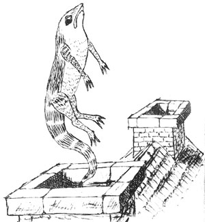
「この家を焼きはらわんとな！」とはウサギの声、そこでアリスはあらんばかりの大声でさけぶ、「やってみなさい、あなたたちにダイナをけしかけてよ！」これがきいて、またしーん、そこでアリスが「でもどうやってダイナをここへ連れてくるわけ？」と考えているうち、気づけばたいへんうれしいことにどんどんちぢんでいく。あっというまに、息苦しい横向きの身のほどからもぬけ出せて、このいどころからも出てゆけるようになるほどで、ものの数分もするとまたまた７センチの背たけに。
全速力でそのおうちからかけ出ると、見つかるのは外で立ちつくす小動物のむれ――モルモット、ラッテといったネズミたちにリスどもと、ミドリカナヘビっていうトカゲの〈ビル〉くん、モルモットの１ぴきにかかえられててね、ほかにもびんから何か飲ませてやってるのもいたり。みんなして、出てきたのを見るなりおそいかかってきたんだけど、アリスはひっしで走ってね、たちまち気づくと深い森のなかにいて。
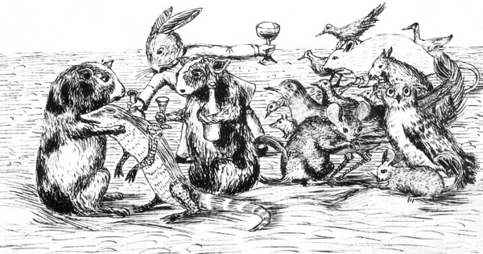
［＃改ページ］
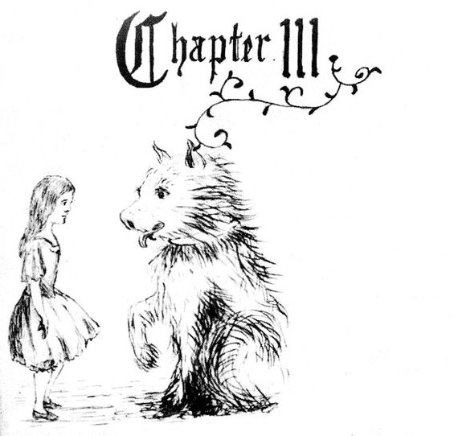
「第１にやるべきことは、」とアリスは森をうろうろしながらひとりごと。「元の背たけになること、それから第２は、あのすてきなお庭へ出る道を見つけること。どうもそうしてみるのがいちばんよさそう。」
たしかに、してみるにうってつけで、すっきりわかりやすい思いつきに聞こえるんだけど、ただひとつこまったことに、とっかかりがさっぱりわからなくってね、そうして、まわりの木々のあいだをそわそわとのぞきこんでいると、ワンとほえる声が頭の上からして、それはもうびくっと顔を起こしたんだ。
１ぴきの図体のでかいワンコが、くりくり大きなお目々でこっちを見ていてね、ぷるぷると前足をのばして当てようとしてくる。「よしよし！」とアリスはあやす言葉のあと、口ぶえを強くふこうとしたんだけど、相手がはらぺこなのかなと気づいたらふるえがとまらなくなっちゃってね、そうなってくると、いくらなだめてもきっとむしゃむしゃ食べられちゃうわけで。もう思わずとっさに木切れをひろい上げてワンコにつきだしてみた。するとワンコはたちまちおどりあがって、きゃんきゃんはしゃぎながら木切れにとびかかる、どうもじゃれたいみたいでね、そこでアリスもふみつぶされないよう、でっかいアザミのかげにひらりとよける、そして反対側から出ると、すぐさまワンコが木切れめがけてまたかけこんできたんだけど、でもつかまえようとあせるあまりすってんころりん、これはもう、考えてみれば馬車馬とふざけ合ってるみたいなものだから、アリスも足でふみつけられそうなときには、そのたびごと、はっとしてかけ足でアザミに回りこむ、だからワンコにしても小きざみに木切れへしかけるようになってね、じわりじわり前につめるかと思いきや大きく後ろ、しじゅうぐるるるとほえっぱなしだったんだけど、はてにはとうとうはなれたところでへたりこんで、はあはあと口から舌を出して大きなお目々も半びらき。
これにアリスも、にげるのは今しかないとふんで、すぐさま動いてかけ足、やがてワンコのほえる声も遠くかすかになっていってね、そのうちこっちもへとへとで息切れ。
「まあでも、あんなワンコ、かわいらしいものね！」とアリスはひと息つこうとキンポウゲにもたれかかり、花の葉っぱであおぎながら、「芸をしこんでみるのも面白そう、その――元の背たけになったらの話だけど！ もう！ もう少しで元通りになるのをわすれるところよ！ う〜んと、どうやればうまくいくのかしら。たぶん何かしら食べるか飲むかすればいいんだろうけど、いったいぜんたい、何を？」
その通り、いったいぜんたい、何を？ アリスがあたりをながめまわしても、草花あれど、都合よく食べられそうなものはその場に何も見当たらない。ところがそばに大きなキノコ、背たけと同じくらいで、見上げたり、両わき、後ろに回ってみたりするうち、かさの上に何があるのか、目を向けてたしかめたいという気持ちになってくる。
つまさき立ちで背のびして、キノコのへりからのぞきこむと、目にとびこんできたのが、こっちを向いた大きな青虫、すわりこんでうでを組み、ひそやかに水ぎせるをふかして、こちらにも何にも気にとめるそぶりさえない。
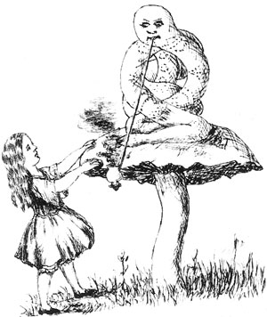
しばらくだまったまま目を合わせていたんだけど、とうとう青虫が口から水ぎせるを外して、けだるそうに声をかけてきた。
「だれじゃ、おぬし。」と青虫。
こんなきっかけでは話も始めづらくって、アリスもどこかもじもじしながら答えてね、「あたくし――よくわかりませんの、今のところ――少なくとも今朝起きたときにはだれだったかわかってたのに、そのあとあたくし、どうも何度か変わってしまったみたいで。」
「どういうことかの？」と青虫。「はっきりしてくれ！」
「だからはっきりしませんの、あいにく！」とアリス。「あたくしがあたくしじゃないの、わかって？」
「わからん。」と青虫。
「あいにく、これ以上何とも言えませんの。」とていねいに受け答えするアリス。「だって自分でもよくぞんじませんし、ほんと、１日でこんな色々な背たけになれば、頭もこんがらがってよ。」
「そうでもない。」と青虫。
「ふん、きっとあなたはまだあんまりおわかりでないのね。」とアリス。「でもあなただってほら、いずれさなぎになって、そのあとちょうちょに変わったりしたら、そういうのやっぱりちょっとけったいに思えるものでしてよ、そう思わない？」
「いささかも。」と青虫。
「少なくとも、」とアリス。「あたくしにはけったいに思えるってこと。」
「おぬしとな！」と青虫は鼻でわらいながら、「そのおぬしはだれなのじゃ。」
というわけで、また話はふりだしに。アリスは、青虫のそっけなすぎるしゃべり口にちょっといらいらしてね、そこでむねをはって、いたけだかに言う、「まずはご自分から名乗るのがすじとぞんじますけど？」
「なぜかね？」と青虫。
これはまたまたなやましい。とっさの言いわけもできないアリス、青虫もひどく気げんをそこねているみたいなので、ぷいっと歩きさろうとしたんだけど。
「そこへもどれ！」と青虫が後ろから声をかけてきてね、「大事なことを教えてやる！」
悪くない話に思えたから、アリスはくるっとして引き返す。
「そう
「それだけ？」とアリスは、なるだけいらいらを飲みこむ。
「いや。」と青虫。
ほかにすることもないので、とりあえず待つことにすれば、そのうちきっと青虫も耳をかせるだけのことを話してくれる、そうアリスはふんだ。しばらくのあいだ、もの言わず水ぎせるをぷかぷかさせてたんだけど、やがてうでをほどいて、ふたたび口からきせるを外して、ひとこと。「自分が変わったと申すのじゃな？」
「そうですの。」とアリス。「前知ってたことが思い出せないの――『がんばるミツバチ』を歌ってみたけど、ぜんぜんちがってて！」
「ならばどうだ、『ウィリアムじいさん』は。」と青虫。
アリスは手を組んで、歌い出す。
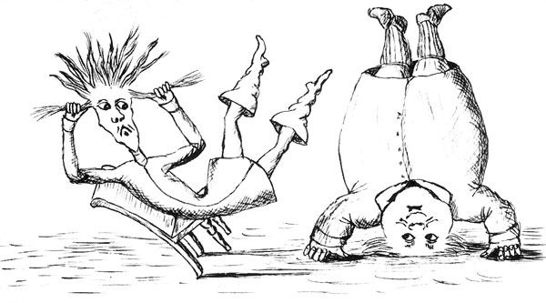
１
「もう年なんだ、ウィリアムじいさん。」
わかもの言った、「頭は白髪 、
なのにいつでも、逆立ちばかり――
自分の年をわきまえろよ！」
わかもの言った、「頭は
なのにいつでも、逆立ちばかり――
自分の年をわきまえろよ！」
２
むすこに向かって、じいさん言った、
「わかいころは、ケガもおそれた、
だけどもともとバカだと気づき、
それからあとは、打ちこむのみよ。」
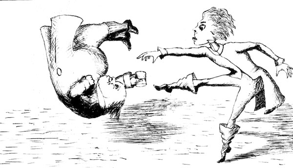「わかいころは、ケガもおそれた、
だけどもともとバカだと気づき、
それからあとは、打ちこむのみよ。」
３
「もう年なんだ、わかってくれよ、
どっから見ても太りすぎだよ、
なのに戸口でバク宙 なんて――
いったい何を考えてんだ？」
どっから見ても太りすぎだよ、
なのに戸口でバク
いったい何を考えてんだ？」
４
しらがふりわけ、じいさん言った、
「わかいころには、しなやかじゃった、
このぬり薬のおかげでな――
ひと箱５シル、どうじゃふた箱。」
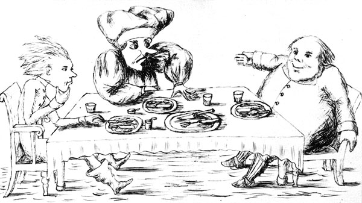「わかいころには、しなやかじゃった、
このぬり薬のおかげでな――
ひと箱５シル、どうじゃふた箱。」
５
「もう年なんだ、はぐきも弱い、
やっとあぶらみ食えるくらいで、
ガチョウをほねごとまるまる平らげ――
こりゃいったいどうなってんだ？」
やっとあぶらみ食えるくらいで、
ガチョウをほねごとまるまる平らげ――
こりゃいったいどうなってんだ？」
６
「わかいころには、へりくつばかり、
ことあるごとに、にょうぼと言い合い、
おかげでアゴもきたえられてな、
死ぬまでずっとそのままじゃろな。」
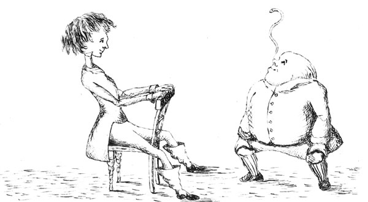ことあるごとに、にょうぼと言い合い、
おかげでアゴもきたえられてな、
死ぬまでずっとそのままじゃろな。」
７
「もう年なんだ、ふつうだったら、
目のほうだってしょぼしょぼのはず、
それでも鼻にウナギを立てて、
じいさんどうしてバカほどきよう？」
目のほうだってしょぼしょぼのはず、
それでも鼻にウナギを立てて、
じいさんどうしてバカほどきよう？」
８
「３べん言えば、わかるじゃろ！
いいかいお前、いい気になるなよ、
こんな話はもうたくさんじゃ。
いなねば上からけりおとす！」
［＃改ページ］いいかいお前、いい気になるなよ、
こんな話はもうたくさんじゃ。
いなねば上からけりおとす！」
「正しくないのう。」と青虫。
「わりとね、あいにく。」とアリスはおずおず。「ところどころちがってはいてよ。」
「初めから終わりまでまちがっておる。」と青虫はばっさり、そのあとしばし、しぃん。先に口を開いたのは青虫。
「どれくらいの背たけになりたい？」とたずねてきてね。
「べつに、背たけにこだわりなんかなくって、」とあわててお返事するアリス、「ただ、ころころ変わるのはいただけなくてよ、やっぱり。」
「今は足りておるのか？」と青虫。
「う〜ん、もうちょっとばかり大きいほうがいただけそう、といったところね。」とアリス。「７センチの背たけって、なってみるとみじめなものよ。」
「こりゃほどよい背たけなんじゃぞ！」と
「でも、こんなのしっくりこなくてよ！」と、弱ったアリスはみじめたらしく食いさがりながら、こう思う。「ここの生き物、こらえしょうってもの、ないのかしら！」
「そのうちしっくりこようて。」と青虫は口に水ぎせるをくわえて、またふかし始める。
今度もアリスは、相手がまた話す気になるまでじっと待ってね、数分すると青虫は口から水ぎせるを外して、キノコから下りて、草むらへとくねくねと立ち入り、去りぎわのすて言葉。「かさのところでのびる、えのところでちぢむ。」
「何のかさ？ 何のえ？」と思うアリス。
「キノコのじゃ。」と青虫、口に出てない言葉に返事したと思いきや、まばたきするともう目の前から消えていて。
アリスは少しのあいだキノコにうたがわしい目を向けていたんだけど、そのあともぎって、おそるおそるふたつにぽっきり、片手にえのところ、もう片手でかさを取って。「えでどうなるんだっけ？」とか言いながら、試しにちょびっとかじってみると。またたくまもなく、いきなりアゴへごちんと何かがぶつかる。なんと足とごっつんこだ！
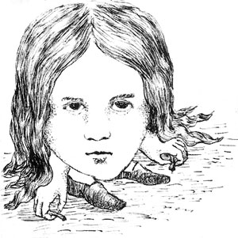
このいきなりの変わりように、たいへんおそれをなしたものの、ちぢむのはそこまで、キノコのかさもとりおとしてないから、まだまだあきらめたりしません。アゴが足にくっついているから、口を開けるのもむりに近いのに、なんとかやりとげて、ついにキノコのかさをちょびっとかみちぎる。
＊ ＊ ＊ ＊ ＊
「うん！ ようやく頭が楽になってよ！」とアリスがはしゃいだのもつかのま、すぐにうろたえだしたのは、自分の
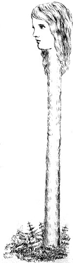
「あの緑のしろものは、何だっていうの？」とアリス、「それにあたくしの肩は、どこに行ってて？ それから、もう！ なんてこと、あたくしの手は？ どうやったらそんな
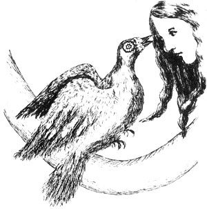
「ヘビめ！」とさけぶハト。
「あたくしヘビじゃなくてよ！」とアリスもぷんすか。「よして！」
「どこへ行っても！」と、やりきれないといったふうに、ハトはしくしく。「どうしようもないのよ！」
「いわんとすること、ちっともぴんと来なくてよ。」とアリス。
「木の根元も行ってみた、土手にも行った、生けがきも行ってみたのに。」とハトはこっちそっちのけで続ける、「やつらヘビが！ いつまでもあきたらない！」
ますますわからないアリスだけれど、口を出してもしかたないので、終わるまでそのまま。
「タマゴかえすのがそう手間じゃないっていうのかいさ！」とハト。「いつだってヘビにぴりぴりしなくちゃいけなくて、昼も夜もよ！ あああ、この３週間、ひとねむりもしてないっていうのに！」
「おなやみお気の毒さま。」とアリスにも、言わんとすることがわかってきた。
「だから森いちばんの高い木にのぼって、」と声をうわずらせるハト、「やっとのがれられたと思っていたところ、来るなら空からおちてくるしかないってのにさ！ うげっ！ ヘビ！」
「でも、あたくしヘビじゃなくてよ。」とアリス。「あたくし――あたくし――」
「ふん！ 何だっていうの？」とハト。「何かごまかそうとしてんじゃないの。」
「あたし――女の子だもん。」と言いつつ、どこかしっくりこないアリス、これまでいく度となくのびちぢみしたのを思い出してしまってね。
「都合のいい言いのがれね！」とハト。「生まれてこのかたおおぜい見てきたけれど、あんたみたく首の長いのはひとっこひとりいなかったね！ そうよ、あんたはヘビ、そんなことはお見通しなんだから！ どうせ次には、タマゴなんて味わったことないって言いくさるんだろ！」
「タマゴくらい味わったことあってよ、ええ。」と言うアリスはほんとに正直もの、「でも、わざわざあなたのものなんかいただくもんですか。
「ふん、なら、しっしっ！」とハトはまた自分の巣におさまる。アリスはアリスで、木々のあいだ、なるだけ身をかがめたんだけど、首が枝にからまるばっかりで、何度もとちゅうでほどくはめに。そのときふと、手ににぎったままだったキノコのかけらを思い出してね、あらためてそうろっとあつかいながら、まずはひとつをかじり、さらにもうひとつ、のびたりちぢんだりしながら、ようやくいつもの大きさにおさまることができた。
かなりひさびさの元の背たけなので、初めはとっぴに思えたけど、ものの数分もするとしっくりくるくる、そしてれいのごとくひとりごとの始まり。「よし！ これで半分はかなったわけね！ ほんとわけわかんなくてよ、ころころ変わるなんて！ 次から次へと、何になっていくのか読めないし！ とはいっても、また元の背たけになれたんだから。お次は、あのきらびやかなお庭に入ることね――どうやってやったものかしら？」
こんなことを言っているうちに、ふと目についた一本の木、そこに何やらなかへと続く戸口がついていて、「まあ、へんてこりん！」とアリスは思ってね、「でも今日はみんなへんてこりん、だから入ってもまあよろしくてよ。」というわけで、なかへお立ち入り。
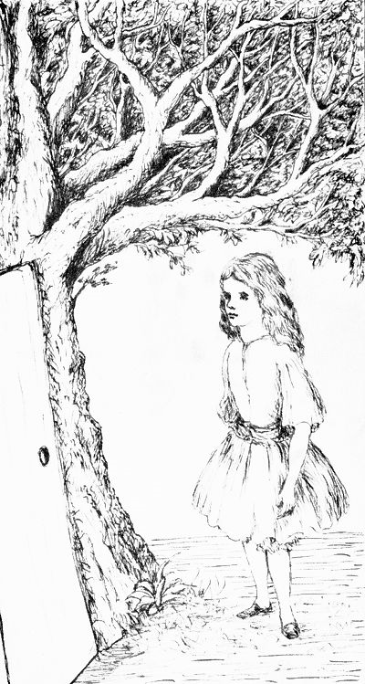
すると気づけばまたもや大広間、そばには小さなガラスのテーブル。「さあて、今度こそうまくやってみせてよ。」とひとりごと、まずはちっちゃな金の
［＃改ページ］
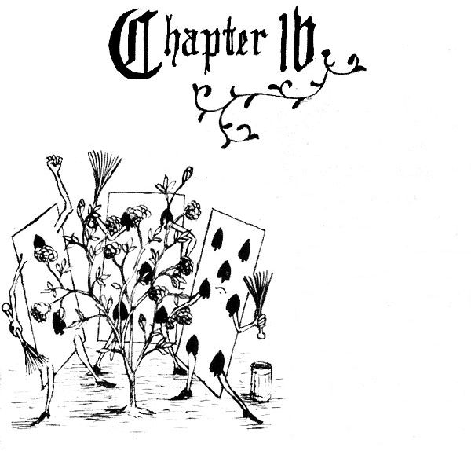
大きなバラの木が１本、庭を入ったところに立っていて、ついてるバラはどれも白なのに、その場にいた３まいの庭係が、いそいそとそいつを赤にぬっていてね。これがアリスにはすごくへんてこなことに思えたものだから、じっくり見ようと足を向けると、近づくなり聞こえてくる、うちひとりの言葉、「気ぃつけろよ、５まい目！ そんなふうにこっちへ絵の具をはねかけんな、こら！」
「しょうがねえだろ。」と５まい目はむっとした声を返す、「７まい目がこっちのひじを小づきやがった。」
それに７まい目も顔を上げて口をはさむ、「やんのか、５まい目！ いつもいつもひとのせいにしやがって！」
「てめえ言ってるばあいかよ！」と５まい目、「聞いたぜつい昨日、クインのやつがてめえの首はねようかっつってな！」
「ワケは？」と口火を切ったやつ。
「てめえの知ったこっちゃねえよ、２まい目！」と７まい目。
「いいや、知ったこっちゃあるんだな！」と５まい目、「だから教えてやんよ、ワケってのはジャガイモとまちがえてチューリップの根っこを料理係に持ってったってな！」
７まい目はハケを放り出してまくし立てる、「はあ？ そんなおかどちげえ――」とここで目にうつるアリス、ふいに話が止まる。ほかの２まいもふり返り、みんなしてかぶりものをぬいで、ふかぶかおじぎ。
「もし、教えていただけて？」とアリスはおずおず、「どうしてバラに色なんかつけてらして？」
５まい目と７まい目は２まい目をにらむだけで、おしだまっている。そこで２まい目が小声で、「その何だ、じょうちゃん、実はさ、本当は赤いバラの木のはずだったんだけど、手ちがいでオレら白いのを植えちまってさ、クインに見つかるはめにでもあったら、もうオレらみんなそろって打ち首よ。つーわけでさ、来ないうちやれることやっとこ――」と、まさにこのとき、庭の向こうをそわそわと見つめていた５まい目が声をあげる、「クインのやつだ！ クインだ！」庭係の３まいはあわててぺたんとうつぶせにたおれる。おおぜいの足音にふり返ったアリスは、当のクイーンにじいっと目をそそぐ。
まずやってきたのが、こんぼうをかまえた１０まいの
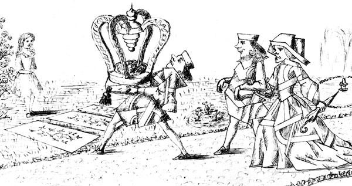
ねり歩きはアリスのまん前まで来ると、そろって立ち止まって目を向けてくる、そこでクイーンが一言ぴしゃり、「こやつはだれよの。」たずね先はハートのジャック、だけど返ってくるのはおじぎとにこにこだけ。
「バカ者！」とクイーンは鼻をつんと上げ、今度はアリスにたずねる。「名は何と言う？」
「あたくしの名前はアリスです、クイーンさま。」とアリスは強気の受け答え、だって心のなかでは、「ふん、ただのトランプ１組！ おそるるに足らずよ！」
「あれは何よの。」とクイーンが指さしたのは、バラの木のまわりにたおれた３まいの庭係、だってうつぶせになっていたし、背中のがらはどのトランプもおんなじだから、そこにいるのが庭係なのか、強者、そばづかえ、はたまた自分の子どもたちなのか、さっぱりでね。
「あたくしに聞かないで。」と言うアリス、その気の強さに自分でもびっくり、「知ったこっちゃなくてよ。」
「からっぽ！」とアリスが大声で言ってのけると、クイーンは静かに。
キングがその手をクイーンのうでに置いて、おずおず言い出す、「これお前、よく考えろ！ ほんの子どもだ！」
クイーンはぷいっと顔をそむけて、ジャックに言いつける、「こやつらひっくり返せ！」
ジャックは、そうろっと片足でやってのけた。
「立てい！」とクイーンがきぃきぃ大声をあげると、３まいの庭係はたちまちとび起き、おじぎを始めてね、キングにクイーン、王子王女にみなみなさまへ。
「ええいやめい！」とかなきり声のクイーン、「目が回る。」とそこでバラの木の方を向いて続ける、「ここで今まで何をしておった？」
「おそれながらクイーンさま。」とへりくだる２まい目は、しゃべるあいだ片ひざをついて、「なんとか３まいで――」
「もうわかった！」と、そのあいだにバラをたしかめていたクイーンは、「こやつらの首をちょん切れ！」そしてねり歩きは動き出し、手を下すための強者が３まい、あとに残されたので、追いつめられた３まいの庭係はアリスにかけよって助けを求める。
「打ち首なんかさせなくってよ！」って、アリスは３まいともをぽっけにつっこんでね。だから３まいの強者には、ぐるりと１周さがされただけで、あとはみんなの後を追ってすたすたすた。
「首はのうなったかえ？」とクイーンの大声。
「みな首なしにて、」と強者の返事も大声、「ございまする、クイーンさま！」
「よろしい！」とクイーンの大声、「そちはクローケーができるか？」
おしだまった強者ども、目を向ける先はアリス、つまりどうも、聞かれてるよってことみたいで。
「はいっ！」とアリスの声は大きくうわずってね。
「ならばこちへ！」と声をひびかせるクイーン、ねり歩きの仲間になったアリスは、これから何が始まるのか気になる気になる。
「これ――よいお日がらであるな！」とおずおずひそひその声。なんととなりを歩いていたのはあの白ウサギ、こわごわ顔をのぞかれていてね。
「本当に。」とアリス、「御前さまはどちら？」
「しっ、しーっ！」と小声で返すウサギ、「聞こえるでおじゃる。クイーンさまがその御前さま、知らんでか？」
「ええ初耳。」とアリス、「何をおおさめ？」
「ハートどもの女王にして、」とウサギはひそひそ声で耳打ち、「ウミガメフーミどもをすべておじゃる。」
「えっ、それ何？」とアリスが口にしたんだけど、返事のひまもなくってね、だってもうクローケーをやる場所についていて、すぐに試合が始まったんだ。
アリスは思った、生まれてこのかたこんなへんてこなクローケー場見たことないって。そこらじゅうが凸凹で。クローケーの玉は生きたハリネズミだし、ボールを打つつちは生きたダチョウ、それに強者どもがわざわざ両足両手をついて身体を２つ折り、玉のくぐるところをつくってね。
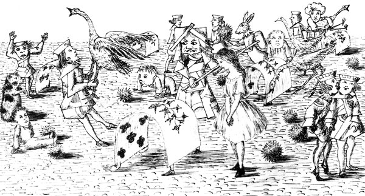
なかでもいちばんむつかしいってアリスがまず気づいたのが、ダチョウのあつかい。そいつのどう体を、おさまりのいいよう、わきにおしこんで、足をぶらぶらさせてみたんだけど、たいていは、首をうまくまっすぐにして頭で打とうとしたとたん、そいつに身体をひねられ顔をのぞきこまれてね、相手があまりにこまった顔をするもんだから、ぷっとふきだしちゃうしかなくって。それから頭を下向きにしてしきりなおしても、今度はハリネズミが丸まってくれずにちょろちょろどっか行き出すもんだから、なやましいったらなくて。ましてやそれどころか、ハリネズミをどこへ転がしたいにしても、たいていその方向には凸か凹、それに２つ折りの強者どもはしじゅう起き上がってべつのところへ歩いていっちゃうから、アリスもたちまち、この試合むつかしすぎると思うにいたる。
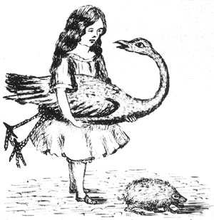
やってる人も自分の番を待たずにみんないっせいにやるし、ずーっと大声で言い合い、ものの数分でクイーンは
そこでクイーンも手をとめて、ぜえはあ言いながら、アリスに一言。「そちはウミガメフーミに会うたか？」
「いいえ。」とアリス、「そもそもウミガメフーミが何だかぞんじませんし。」
「ならばこちへ。」とクイーン、「さすれば本人がいわれを教えてくれよう。」
いっしょになってそこをはなれるとき、アリスの耳へ、キングがその場のみんなにかける声がかすかに、「このたびはみな大目に見る。」
「はあ、ほっとしてよ！」と思うアリス、クイーンが打ち首をたくさん言いつけてかなり心をいためていたからね。

まもなく行き当たったのが１ぴきのグリフォン、日なたですやすやねていてね（グリフォンがどんなのか知らないなら、さし絵をごらん）、「起きよ、なまけもの！」とクイーン、「この
身体を起こしたグリフォンが目をこすって、そのあと見えなくなるまでクイーンをまじまじ。そのあとふくみ笑い。「けっさくでい！」とグリフォンは、ひとりごと半分でアリスに言う。
「けっさくって、何が？」とアリス。
「あの女さ。」とグリフォン。「みんなあいつの思いこみでい、だれひとり打ち首なんてねえってことよ、こっちだ！」
「ここの方々『こっちだ』ばっかり。」と思いつつもアリスはグリフォンのあとをゆっくり歩いていく。「生まれてこのかた、そんなふうに言いつけられたことなくてよ――なくってよ！」

歩いてほどなく遠くに見えてくるウミガメフーミ、いわおの小さなでっぱりに、ひとり悲しそうにこしかけていてね、近づくにつれ聞こえてくるため息、まるでむねがはりさけたみたい。だから心からかわいそうになって、「何が悲しくって？」とグリフォンにたずねたんだけど、グリフォンの答えは、さっきのとほとんど同じような言葉でね、「みんなあいつの思いこみでい、悲しいことなんてべつにありゃしねえ、こっちだ！」
で、ウミガメフーミのところまでたどりつくと、大きな目をうるうるさせて見てくるわりに、ものも言わない。
「こちらの
「申します。」とウミガメフーミは、消え入りそうな声で、「おすわりくだせえ、しまいまでどうかお静かに。」
というわけで、こしを下ろして、しばしのあいだみんなだんまり。そこでアリスは考えごと、「始まらないなら、おしまいも何もないんじゃなくて？」でもじっとこらえる。
「昔は、」とついに口を開くウミガメフーミ、ふかいため息ついて、「あっしもまっとうなウミガメでした。」
そう切り出したあと長い長い間があってね、ときどきグリフォンの「ひっくるぅー」というおたけびがはさまったり、ひっきりなしウミガメフーミのさめざめという泣き声が聞こえたりするくらいで。アリスは立ち上がって「面白いお話ご苦労さま。」と言い捨てそうになるところだったけど、きっと何かあるはずとどうしても思えるのもあって、すわったままだまっていたんだ。
「まだ小せえころは、」とウミガメフーミはおもむろに続きを話し出してね、たびたびまだしゃくり上げたりしながら、「海の学びやに通うたもんで。先生はウミガメのじいさんで――あっしらはよくスッポンと呼んどり――」
「どうしてそんなあだ名になって？ ほんとはちがうのに。」と口をはさむアリス。
「まっさらな本は
「てめえそんな当たりめえのこと聞いてはずかしくねえのか？」とグリフォンが追いうち、そのあとはふたりとももの言わずすわったまま、かわいそうなやつと目を向けてくるので、アリスは穴があったら入りたい気持ちになってきて。やがてグリフォンがウミガメフーミに声をかけてね、「続けろい、こんにゃろ！ 日がくれちまう！」するとウミガメフーミはこう言葉をついでいく。
「もしやおめえさんは海の底でくらしたことがなくて――」（「なくてよ。」とアリス。）「するってえとまさかロブスターにも顔合わせたことがねえ――」（「食べたことはあ――」と言いかけたけどあわてて口をつぐんで、「ない、ぜんっぜん。」と言い直すと、）「なら、ごぞんじねえわけですな、うっきうきのロブスターのカドリールは！」
「ええ初耳。」とアリス、「どういうものなの？」
「そりゃあ、」とグリフォン、「海辺ぞいに１列になってな――」
「２列でい！」と声を上げるウミガメフーミ、「アザラシにウミガメにシャケにいっぺえよ――２歩前ん出て――」
「てめえごとで相手にロブスターをだな！」と声をはるグリフォン。
「そうともさ。」とウミガメフーミ、「２歩出て相手につらを向けてな――」
「ロブスターを取りかえ、元の列にもどる――」と横入りするグリフォン。
「それからほら、」と先を続けるウミガメフーミ、「投げんだよ――」
「ロブスターを！」とさけぶグリフォン、ぴょーんとおどり上がる。
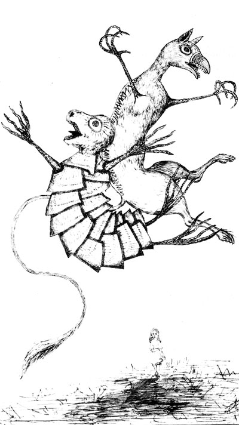
「できるだけ海の遠くへ――」
「で追っかけて泳ぐ！」とグリフォンのおたけび。
「海んなかでとんぼ返りよ！」と大声のウミガメフーミはやたらはね回る。
「またロブスターの取っかえ！」とあらんかぎりにわめくグリフォン、「そんで――」
「おしまい。」とウミガメフーミはとたんに声をひそめて、ふたりはそれまでずっと頭おかしいくらいにぴょんぴょんしていたのに、またもの悲しそうにすわりこんで、アリスに目をやる。
「それなりにすてきなダンスじゃなくて？」とアリスはぎこちない。
「ちっとばかし見たかあねえですか？」とウミガメフーミ。
「ええぜひ。」とアリス。
「さあ、ひと回りやってみやしょうぜ！」ウミガメフーミからグリフォンへ、「まあロブスターなしでもできましょうて。どっちが歌いやす？」
「よし！ てめえが歌え！」とグリフォン、「文句をわすれちまってな。」
と、もったいぶりつつ始めると、アリスのまわりをぐるぐる、たびたび近づきすぎては毎回つま先をふんづけていきつつ、ふしを取ろうと前足ふりふり、そのあいだ歌うのはウミガメフーミ、しみじみこんなふう。
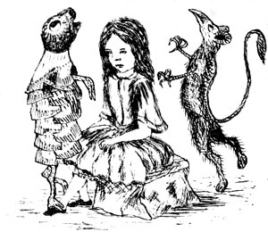
ロブスターびっしり――
かこまれ、ふたりで
ダンスを、シャケさま！
グリフォンもコーラスで歌にくわわる、文句はこう。
行ったり来たり！
おっぽふりふり！
海の魚の
いちばんはシャケさ！
おっぽふりふり！
海の魚の
いちばんはシャケさ！
「ご苦労さま。」とアリスは、ダンスが終わってほっとした気分。
「もうひと回りとしゃれこむか？」とグリフォン、「それよかお歌が好みか？」
「ええ、お歌をお願い！」とアリスの返事があまり本気なので、グリフォンもちょっときずついたみたいで、「へえ！ 人も好き好きか！ 『ウミガメフーミスープ』を歌ってやれ、こんにゃろめい！」
深くため息をついたウミガメフーミは、時になみだにむせびながらも歌い出す。
すてきなスープ こくみど
おさらでほかほか！
がまんできない、もう！
よぉるのスープ すてきなスープ
よぉるのスープ すてきなスープ
すぅ〜てきなスぅ〜プ！
すぅ〜てきなスぅ〜プ！
よぉ〜るのスぅ〜プ
すてきなすてきなスープ！
おさらでほかほか！
がまんできない、もう！
よぉるのスープ すてきなスープ
よぉるのスープ すてきなスープ
すぅ〜てきなスぅ〜プ！
すぅ〜てきなスぅ〜プ！
よぉ〜るのスぅ〜プ
すてきなすてきなスープ！
「※くり返し！」とグリフォンが声をはって、ウミガメフーミがふたたび歌い始めたまさにそのとき、「おさばきの始まり！」というさけび声が遠くから聞こえてきて。
「こっちでい！」とグリフォンはアリスの手を取ってかけ出していく、歌の終わるのもまたずに。
「何？ おさばきって？」とアリスが走りながら声をふりしぼったのに、グリフォンは「こっちだ！」って返すだけでどんどん早足、追い風がふいてるせいか、ますますかすかになっていくうらぶらげな声。
よぉ〜るのスぅ〜プ
すてきなすてきなスープ！
すてきなすてきなスープ！
つくと、キングとクイーンが高いところにすわっていて、そのまわりにはおおぜいがお集まり。ジャックが引っ立てられてて、それにキングのすわる前にはあの白ウサギ、片手にトランペット、もう片手に羊の皮のまき紙。
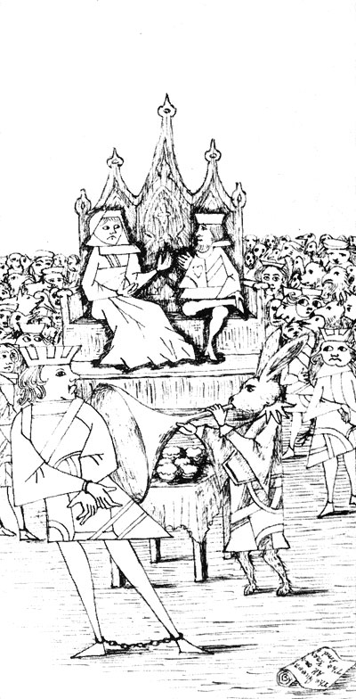
「しきり役！ おかされた罪を読み上げよ！」とキング。
これを受けて、白ウサギはトランペットを３ふき、それからまき紙を広げて、こう読み上げる。
ハートのクインがタルトを作る
夏のさなか１日かけて
ハートのジャックがタルトをぬすむ
かくれてこっそりひとりじめ！
夏のさなか１日かけて
ハートのジャックがタルトをぬすむ
かくれてこっそりひとりじめ！
「さてこれよりたしかめる。」とキング、「そののち言いわたす。」
「いいえっ！」とクイーン、「言いわたすのが先、たしかめるのは
「からっぽ！」とさけぶアリス、あまりの大声にみんなとび上がる、「言いわたすのが先だなんて！」
「だまらっしゃい！」とクイーン。

「だまらない！」とアリス、「あんたたちなんてただのトランプ！ だれが言うこと聞いて？」
せつな、トランプがいっせいにおどり上がり、空からふりそそいでくる。きゃッと、びくついたあと打ちはらおうとしたら、気づけばもとの池のほとり、お姉さまにひざまくら、木から頭へひらひら落ちかかっていた葉っぱをやさしく取りはらってくれていて。
「起きて！ アリスちゃん。」とお姉さま、「ほんと長々としたお昼ねだこと。」
「ねえ、あたくしもう、へんってこなゆめ見てたの！」とアリスはお姉さまに自分の地底めぐりのことを、ここまで読んできた通りぜんぶおしゃべり、終わるとお姉さまはキスをしてくれてね、こう言うんだ。「へんてこなゆめだったのね、ほんと！ でもすぐにお茶へかけ足しないと。このままだとちこくよ。」
というわけで、アリスはかけ足、走りながら心のなかは（そりゃやっぱり）、これまでのふしぎなゆめのことでいっぱい。
――――――――――――――――――
ところがお姉さまはその場にしばらくあとまですわったまま、夕ぐれをながめながら、小さなアリスと地底めぐりのことを考えているうち、今度は自分もうつらうつらゆめを見始めてね、そのゆめっていうのはこう。目の前には大むかしの大きな街、そのそばを原っぱぞいに川がそよそようねうね、その流れをゆっくり静かにさかのぼっていくボートには、楽しそうな子どもたちの集まり――聞こえてくるおしゃべり、
そうして（いわばゆめのなかのゆめとして）思いうかべるのは、この当の小さいアリスがこれから先、ひとりの女に育っていくさま。大人にふくらんでいくなかでも、子どものころの、すなおなあたたかい心を持ち続けていくのか。そして、だれかの子どもをまわりに集め、たくさんふしぎな話をしては、その子たちの目をきらきらかがやかせるのだろうか。その話は、遠い昔に小さなアリスがめぐったお話そのものだったり？ すなおに悲しむその子たちのそばで、自分もと、すなおにはしゃぐその子たちにかこまれ、楽しかったと気づくのかな、自分の子ども時代の思い出、あの幸せな夏の日々に。
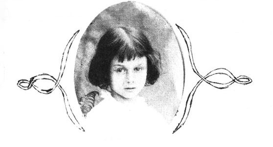
［＃改丁］
これは、Lewis Carroll, Alice's Adventures Under Ground (1864) の翻訳です。
1862年7月4日に初めて語られ、そのあと1863年2月までに草稿、そして1864年11月26日に少女アリス・リデルにプレゼントされました。一般的に Alice's Adventures Under Ground と呼ばれるものは、この1864年にアリスに贈られた自筆挿絵つきの手稿本のことを指します。
この手稿本が初めて出版されたのは1886年ですが、今回の翻訳には以下の底本を参照しています。
【BL】Alice's Adventures Under Ground: A Facsimile, London: The British Library, 2008.
【PC】"Alice's Adventures Under Ground", Alice's Adventures in Wonderland and Through the Looking-Glass (Penguin Classics), London: Penguin Books, 1998.
【OW】Alice's Adventures Under Ground: Being A Facsimile of the Original MS. Book Afterwards Developed into "Alice's Adventures in Wonderland", Richmond: Oneworld Classics, 2009.
【PV】Alice's Adventures Under Ground, London: Pavilion Books, 1985.
【DO】Alice's Adventures Under Ground: A Facsimile of the 1864 Manuscript, New York: Dover Publications, 1965.
【ET】Alice's Adventures Under Ground: Being the Book Afterwards Developed into Alice's Adventures in Wonderland, Westport: Evertype, 2009.
現在の所蔵元大英図書館からの刊本 BL を最新の手稿本フルカラーファクシミリとして最終的に依拠する底本とし、PC 収録の活字翻刻を現時点で最も信頼できる本文として利用しました。また OW は1886年に出た白黒製版の複製本のリプリントとして適宜参照、手稿本モノトーンファクシミリの DO を最終ページの確認に使用、なおかつ活字翻刻の ET を PC の疑問点（ネズミの尾詩等）を解決するための補助としました。
読者としての観点も述べておくと、BL はいかんせん経年劣化が否めず、読み物というよりは研究やコレクションのためのものになっています。PC は活字化されていますが自筆挿絵が全部は収録されておらず、単にキャロルの手稿本を読んで楽しむというのであれば、やはり1886年一般読者向けに出版されたもののリプリントである OW もひとつの選択肢でしょう。OW がそこそこきれいな白黒製版である（ただし絵の筆致は質的限界から劣化している）のに対して、DO のファクシミリは元の紙質を反映して全頁が灰色で、1886年の序文・巻末詩が付録されているとはいえ、読むのに向いているとはお世辞にも言えません。PV は日本で『不思議の国のアリス：オリジナル』として出版されているものの原本ですが、BL が出た今は資料的価値があるのみです。なお ET は、文字コード界隈でのさる有名人がひたすらアリス関係の原著・パロディを出版し続ける奇特な個人出版社のものですが、本文の元データは Project Gutenberg のものを用い、独自に読みやすいよう編集を加えています。ただ挿絵は全収録なので、活字本として読むならこのETもひとつの選択肢でしょう。
この Alice's Adventures Under Ground の文体は、当時の一般的な文章とはまったく、また最終的に本になった Alice in Wonderland とも少し異なるものです。特徴を箇条書きするとこうなります。
・一文の息が長い
・括弧書きの内語が多い
・キャラの個性よりも、筋の奇天烈ぶりの方に重きがある
・言葉遊びはまだ少ない
ひとつめについては、単に文章が長いというわけではなく、文章が凝っているために長くなったということでもありません。ごくシンプル文が伸びただけのものや、あるいは普通ならピリオドで止めてしまうような文と文が、コンマやコロン・セミコロンといった句読点で一気につながれてゆく、というものです。まるで、しゃべりたいことをわーっと一息に言ってしまうような、そういう長い息が感じられるのです。
そして内語については、自分のしゃべる物語へ、常に自己言及的に文章が挿入されていく、というものです。再説明、言い訳、照れ隠し、理由としては様々ですが、そこここで普通以上に括弧が現れ、要不要を問わず、奇天烈な世界をアリスを補足していきます。のち「ふしぎの国」として本になったもの以上にその括弧は多く、その刊本では外されているところでも、執拗に括弧でくくられていたりします。
さらに「ふしぎの国」との大きな違いは、ストーリーテリングが重視されており、奇怪なキャラなどはまだほとんど現れていないということです。帽子屋も豚になる赤子もおらず、人ならぬ従卒たちも、そして何よりもチェシャ猫が姿を現しません（青虫とウミガメフーミくらいです）。変化する主人公と転じる場が主たる筋となって進んでいくわけです。
最後に「ふしぎの国」の持ち味でもある、様々なナンセンス・言葉遊びもまたここには多くありません。いくつか即興的なものは散見しますが、あれこれ考えた上での論理的なナンセンスはまだまだ少なく、替え歌やだじゃれといったものが大半です。しゃべられたもの、と、書かれたもの、とのあいだの違いがおそらくはあるのでしょう。
ここであらためて言うまでもないことですが、〈アリス〉といえば、今や多くの人がイメージできるキャラクタです。確かに、この本をプレゼントされたのは実在するアリス・プレザンス・リデルですが、キャロル自身どうやら、このお話のアリスは、実在のアリスとは〈離れて〉いることを自覚していたらしく、またこうして本にまとめる段、意図的に〈離そうとした〉形跡もあります。
そもそもこのアリスは、年齢からして違います。このお話に出てくるアリスは七歳、語られた相手のアリスは当時一〇歳、そして送られる頃には一二歳となっていました。また、挿絵のアリスの髪が、ウェーヴのかかった長髪であるのに対して、七歳のアリス・リデルは写真を見る限り短いおかっぱ髪でした。Alice in Wonderland のジョン・テニエルの挿絵になると、ここからさらにかけ離れていきます。
実在のアリスについてはさておき、この話のアリスは、その後様々に生まれるアリスイメージの原形となっています。記述から読み取れる特徴をまとめるとしたら、以下のようになるでしょうか。
・しつけられた上流の子女らしく、しっかりした言葉遣いで
・いらいらしたときには、さらにいやみたらしく丁寧に
・そして基本、相手に対しては強気
このあたりは、英国らしい〈気高さ〉の表出とも考えられますが、ひとりの少女としては、
・普通に恐がりで、虚勢を張りがち
・けれども、大変な状況をもすぐに楽しみ出せる強さがある
このあたりが、能動的で感情移入できる、冒険ものにふさわしいヒロインと受け取られている一因でもあるでしょう。
このアリス像を成長した実在のアリスへ送ることについて、キャロルは本編末尾にあるようたいへん自覚的です。さらに大事なのは、キャロルはこれを〈ぼくらふたりの特別な夏の日の思い出として親愛なるアリスへクリスマスに贈る〉のではなく、献辞にはアリスの名を消した上で、あえて〈ある夏の日の思い出〉として、〈Dear Child〉のひとりへのクリスマスプレゼントにしていることです。
物語のアリスやキャラとも、語る相手にも、つかず離れず少し距離と取りつつつらつらと語るキャロルの筆致は、乗り乗りで楽しみにあふれたものでありながら、どこか落ち着いていて内省的でもあり、時に冷淡ささえ感じられます。
キャロルの強い自制心と想像力のはざまで生まれたアリス――いや、生まれかけのアリスは、我々の知る通り、その後キャラとして自立して世界へ広がっていくことになるわけです。
今回の訳は、白黒サイレント映画『ふしぎの国のアリス』の日本語字幕に始まる、個人的な一連のアリス翻訳の４つめに当たります。これまでやったものを並べてみると、以下の通り。
・白黒サイレント映画『ふしぎの国のアリス』（1903）
・『不思議の国のアリス ミュージカル版』（1886）
・『えほんのアリス』（1890）
・『アリスの地底めぐり』（1863）
これまではいずれも自由利用できるものとして公開しており、むろん今後は本編 Alice in Wonderland も、この『アリスの地底めぐり』との追記・改訂の差分を確かめた上で、訳していきたいと思っております。ゆくゆくは、ルイス・キャロル本人の手がけたアリスをすべて収録したコンプリート・アリス（？）のような記念本などを作れるといいかもしれませんね。
訳題が『アリスの地底めぐり』となっているのは、原題が別のものを何でもかんでも「〜の国のアリス」とするやり方に私自身が賛同できないこともありますが、戦前の Alice's Adventures in Wonderland 訳題に「不思議国めぐり」とするものがいくつかあり、"adventure"を〈めぐり〉とするセンスが気に入っているからでもあります。〈地底〉としたのは、〈地下〉だとどうしても地下室や建物のニュアンスを感じてしまうので、冒険としては〈地底〉の方がよかろうかな、と。
１５０年の節目にこれを訳した動機というのは、aozorablog に掲げた予告（http://www.aozora.gr.jp/aozorablog/?p=696）と「水牛のように」2002年7月号（http://www.suigyu.com/sg1207.html#05）ですでに記しております。それ以外にも、周囲へのおしゃべりのなかで（私はやるかどうかわからない思いつきをよくぺらぺら話します）、勧めて下さる方々が様々いらっしゃったからでもあって、こうして無事完走できたことでご恩返しできたのではと思う次第です。
最後に。この翻訳はフリー公開されておりますが、完全なる無償の奉仕活動によるものではありません。講師業の授業テキストとして採用することで、作業に取り組む時間と対価を確保しております。念のため。